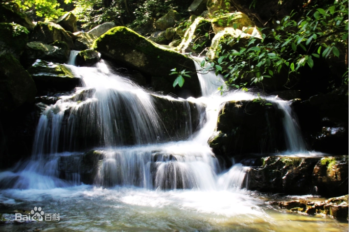
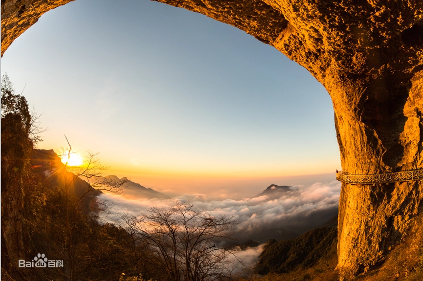
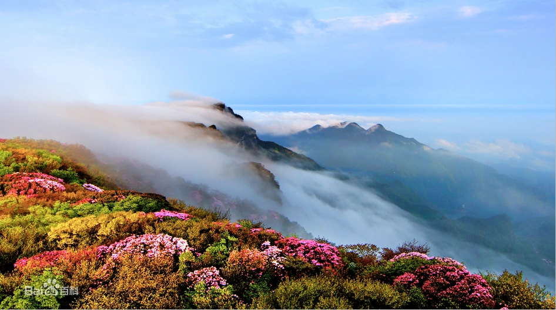

金佛山（Jinfo Mountain），位于重庆市南川区境内，大娄山脉北部，面积1300平方千米，景区面积441平方千米，主峰凤凰岭（风吹岭）为金佛山最高峰，海拔2238米，森林覆盖率达95%以上，负氧离子含量每立方厘米约十万个。 [1]
金佛山25万亩原始常绿林中，萃集237科2997种植物。景区被誉为“东方的阿尔卑斯山”。 [2] 金佛山属典型的喀斯特地质地貌，峰谷绵延数十条大小山脉，屹立100多座峭峻峰峦。区内天然溶洞星罗棋布，以古佛洞最为著名。 [3]
2013年9月13日，南川区金佛山联合神龙峡风景区正式被国家旅游局批准为国家AAAAA级风景名胜区； [4] 2014年6月15日，金佛山景区入选世界自然遗产，被列入《世界遗产名录》
主要景点
碧潭幽谷景区
金佛山碧潭幽谷景区位于全新开发的金佛山国家风景名胜区西部，
属溪口峡谷型生态旅游景区，碧潭幽谷是金佛山溪口峡谷型生态旅游的
代表景区之一。分为幽谷听泉、石崖意禅、归去来园、绝壁览胜、地质
奇观五个体验段。这里每立方厘米负氧离子含量高达10万个。
景区峡谷长3.5千米，约需要游览时间2个小时。同时，
这个景区也是西坡上山步游道的构成之一，整个西坡上山步游道自这里开始
，一直到山顶，全长13千米，全程约需3—4小时。

金佛山绝壁栈道
绝壁栈道是金佛山最为雄奇的景观，栈道全长有3.5千米，
其中1.5千米里几乎是在垂直的90度崖壁上建成，离地面40－50米，
这条索串连起了金龟朝阳、箭竹海、灵官洞、生态石林等景点。 [16]
金佛山索道，属单线循环脱挂抱索器吊厢式，进口于法国，
由法国波马公司负责设计、生产、调试的成套进口机电设备，索道轿厢外观漂亮
，安全舒适。索道全长2700米、水平距离2500米、垂直高度900米、全线15个支架
、主驱动功率700千瓦、全线设置客运吊箱50+1个、
每个吊厢乘坐8人、索道运行速度6米/秒、运力为每小时1400人/小时。 [16]

世界野生杜鹃公园
世界野生杜鹃公园是金佛山核心景区之一，面积约6平方千米，
游步道总长约4千米，主游线2.2千米，由绝壁栈道、灵官洞
、金佛寺、方竹林海、杜鹃王庭、观花全景平台、九莲宝顶
、金山之巅、凌空栈桥等主要景点及金山日出、九递云海、
西天佛光、杜鹃花雨等主要景观组成。
